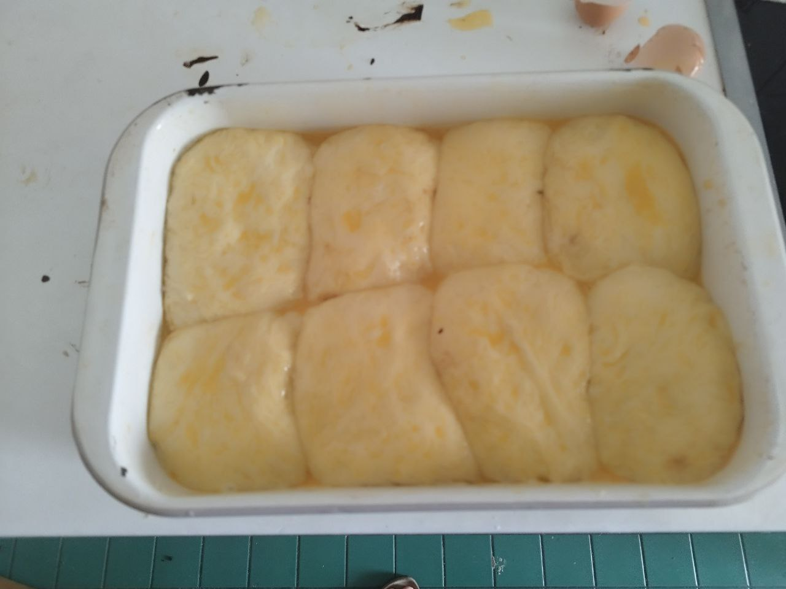
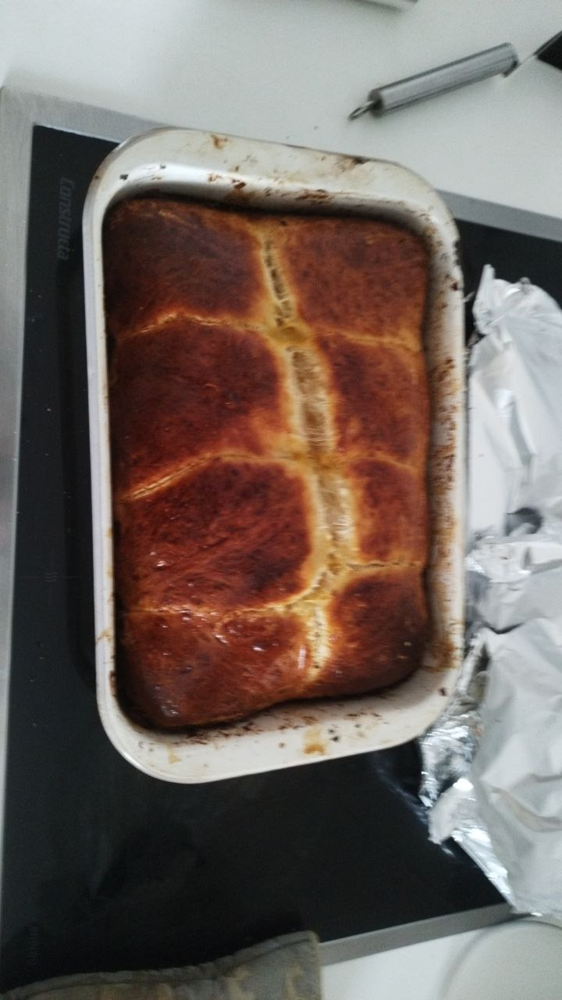
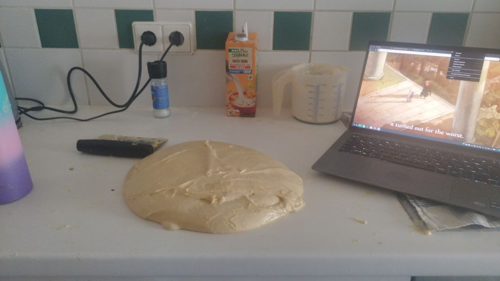
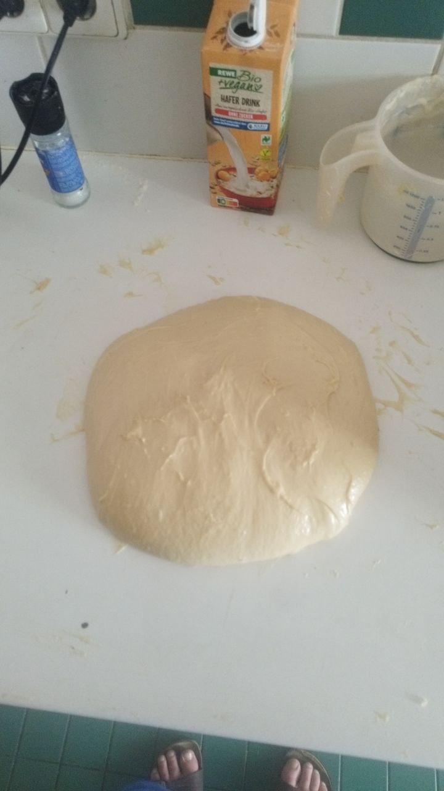
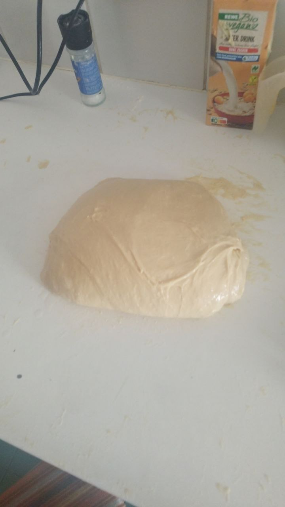
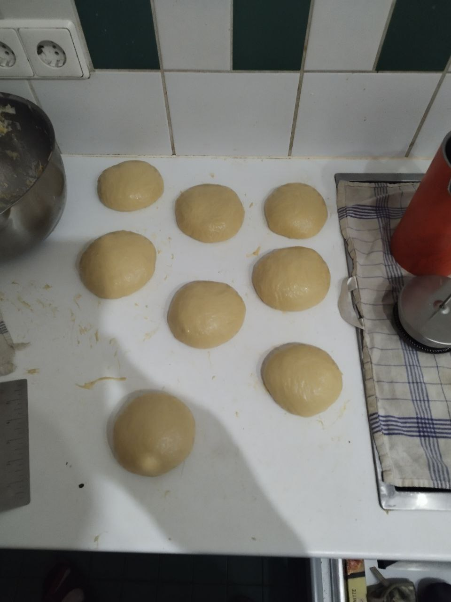
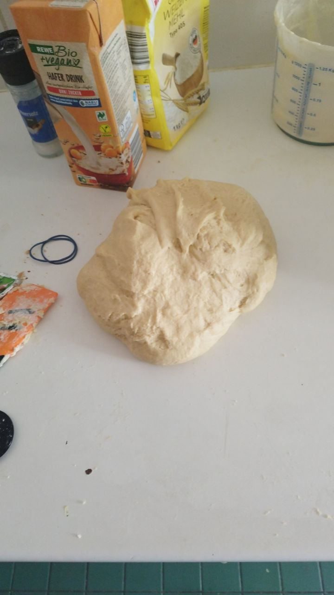
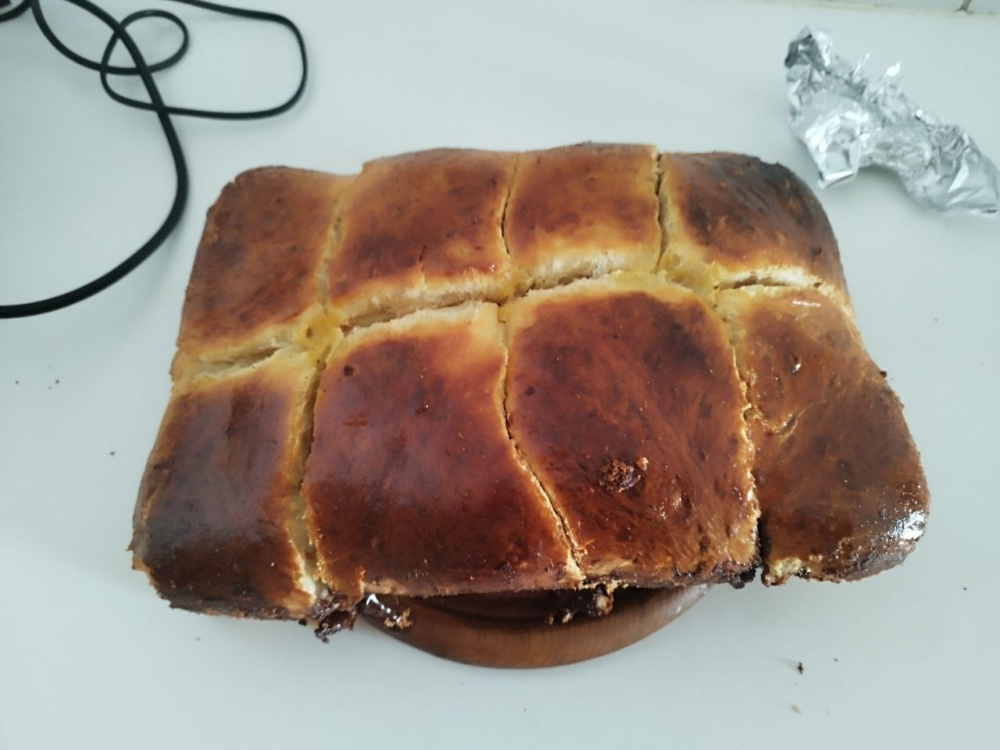

Brioche
- 15
g
dried yeast
- 450
g
flour
- 80
ml
milk
- 3
eggs
- 1
Tbsp
salt
- 200
g
butter (1)
- 50
g
sugar
- 1
egg yolk
- Dissolve sugar and yeast in milk and rest for about 10min
- Combine flour, eggs and salt and mix with milk
- Use a spatula to mix until the dough comes together
- Mix on low speed in a stand mixer for 5min, then on medium speed for another 10min (2)
- Slowly add in butter, about 25-30g at a time and mix for about 2min at medium speed after each piece is added (3)
- Mix on medium speed for 20min, until the dough climbs up the kneading hook (4)
- Remove dough from mixer and form into a ball, rest for 2.5h, volume should be doubled after.
- Separate the dough into 3 or 6 pieces (5), knead them into balls and rest in the fridge for 1.5 hours
- Either knead the balls again and form them into tight balls again, or roll them into long logs and braid them together
- Rest the dough again for at least 1h, better 4-5h or over night in the fridge
- Preheat oven to 200C convection and place loaf onto a baking form (with lid (6))
- Brush with egg and bake uncovered for 15min
- Put a lid on top and bake for another 20min (7)
- Remove from form and cool down at least 45min
Notes
(1) Use butter straight from the fridge, it should still be cold. From the mixing it will slowly rise to room temperature and should stay at the temperature of the rest of the dough.
(2) Alternatively, knead by hand for at least 20min
(3) When kneading by hand, knead at least 5-10min for each piece
(4) If kneading by hand, knead at least 30min, better 40-50min until the dough is very smooth
(5) If making brioche buns, separate into as many pieces as you want rolls
(6) Use aluminum or similar foil as a lid if the form has no lid
(7) The internal temperature should be at 88C after baking







